BOOK I. PROPOSITIONS.¶
Proposition I.1
On a given finite straight line to construct an equilateral triangle.
Proposition I.2
To place at a given point (as an extremity) a straight line equal to a given straight line.
Proposition I.3
Given two unequal straight lines, to cut off from the greater a straight line equal to the less.
Proposition I.4
If two triangles have the two sides equal to two sides respectively, and have the angles contained by the equal straight lines equal, they will also have the base equal to the base, the triangle will be equal to the triangle, and the remaining angles will be equal to the remaining angles respectively, namely those which the equal sides subtend.
Proposition I.5
In isosceles triangles the angles at the base are equal to one another, and, if the equal straight lines be produced further, the angles under the base will be equal to one another.
Proposition I.6
If in a triangle two angles be equal to one another, the sides which subtend the equal angles will also be equal to one another.
Proposition I.7
Given two straight lines constructed on a straight line (from its extremities) and meeting in a point, there cannot be constructed on the same straight line (from its extremities), and on the same side of it, two other straight lines meeting in another point and equal to the former two respectively, namely each to that which has the same extremity with it.
Proposition I.8
If two triangles have the two sides equal to two sides respectively, and have also the base equal to the base, they will also have the angles equal which are contained by the equal straight lines.
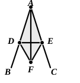
Proposition I.9
To bisect a given rectilineal angle.
Proposition I.10
To bisect a given finite straight line.
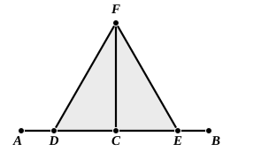
Proposition I.11
To draw a straight line at right angles to a given straight line from a given point on it.
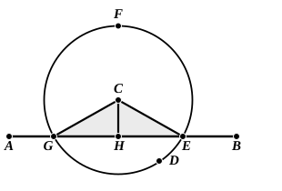
Proposition I.12
To a given infinite straight line, from a given point which is not on it, to draw a perpendicular straight line.
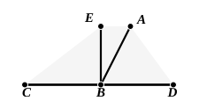
Proposition I.13
If a straight line set up on a straight line make angles, it will make either two right angles or angles equal to two right angles.
Proposition I.14
If with any straight line, and at a point on it, two straight lines not lying on the same side make the adjacent angles equal to two right angles, the two straight lines will be in a straight line with one another.
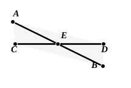
Proposition I.15
If two straight lines cut one another, they make the vertical angles equal to one another.
Proposition I.16
In any triangle, if one of the sides be produced, the exterior angle is greater than either of the interior and opposite angles.
Proposition I.17
In any triangle two angles taken together in any manner are less than two right angles.
Proposition I.18
In any triangle the greater side subtends the greater angle.
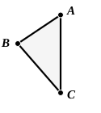
Proposition I.19
In any triangle the greater angle is subtended by the greater side.
Proposition I.20
In any triangle two sides taken together in any manner are greater than the remaining one.
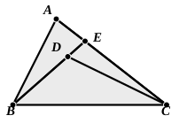
Proposition I.21
If on one of the sides of a triangle, from its extremities, there be constructed two straight lines meeting within the triangle, the straight lines so constructed will be less than the remaining two sides of the triangle, but will contain a greater angle.
Proposition I.22
Out of three straight lines, which are equal to three given straight lines, to construct a triangle: thus it is necessary that two of the straight lines taken together in any manner should be greater than the remaining one. [I. 20]
Proposition I.23
On a given straight line and at a point on it to construct a rectilineal angle equal to a given rectilineal angle.
Proposition I.24
If two triangles have the two sides equal to two sides respectively, but have the one of the angles contained by the equal straight lines greater than the other, they will also have the base greater than the base.
Proposition I.25
If two triangles have the two sides equal to two sides respectively, but have the base greater than the base, they will also have the one of the angles contained by the equal straight lines greater than the other.
Proposition I.26
If two triangles have the two angles equal to two angles respectively, and one side equal to one side, namely, either the side adjoining the equal angles, or that subtending one of the equal angles, they will also have the remaining sides equal to the remaining sides and the remaining angle to the remaining angle.
Proposition I.27
If a straight line falling on two straight lines make the alternate angles equal to one another, the straight lines will be parallel to one another.
Proposition I.28
If a straight line falling on two straight lines make the exterior angle equal to the interior and opposite angle on the same side, or the interior angles on the same side equal to two right angles, the straight lines will be parallel to one another.
Proposition I.29
A straight line falling on parallel straight lines makes the alternate angles equal to one another, the exterior angle equal to the interior and opposite angle, and the interior angles on the same side equal to two right angles.
Proposition I.30
Straight lines parallel to the same straight line are also parallel to one another.
Proposition I.31
Through a given point to draw a straight line parallel to a given straight line.
Proposition I.32
In any triangle, if one of the sides be produced, the exterior angle is equal to the two interior and opposite angles, and the three interior angles of the triangle are equal to two right angles.
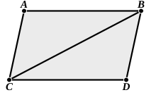
Proposition I.33
The straight lines joining equal and parallel straight lines (at the extremities which are) in the same directions (respectively) are themselves also equal and parallel.
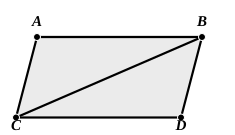
Proposition I.34
In parallelogrammic areas the opposite sides and angles are equal to one another, and the diameter bisects the areas.
Proposition I.35
Parallelograms which are on the same base and in the same parallels are equal to one another.
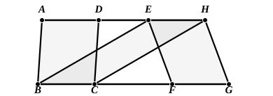
Proposition I.36
Parallelograms which are on equal bases and in the same parallels are equal to one another.
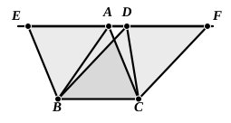
Proposition I.37
Triangles which are on the same base and in the same parallels are equal to one another.
Proposition I.38
Triangles which are on equal bases and in the same parallels are equal to one another.
Proposition I.39
Equal triangles which are on the same base and on the same side are also in the same parallels.
Proposition I.40
Equal triangles which are on equal bases and on the same side are also in the same parallels.
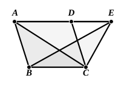
Proposition I.41
If a parallelogram have the same base with a triangle and be in the same parallels, the parallelogram is double of the triangle.
Proposition I.42
To construct, in a given rectilineal angle, a parallelogram equal to a given triangle.
Proposition I.43
In any parallelogram the complements of the parallelograms about the diameter are equal to one another.
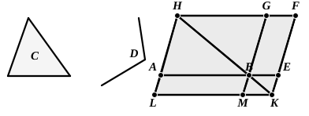
Proposition I.44
To a given straight line to apply, in a given rectilineal angle, a parallelogram equal to a given triangle.
Proposition I.45
To construct, in a given rectilineal angle, a parallelogram equal to a given rectilineal figure.
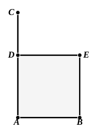
Proposition I.46
On a given straight line to describe a square.
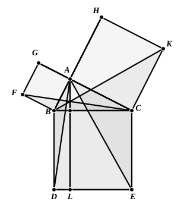
Proposition I.47
In right-angled triangles the square on the side subtending the right angle is equal to the squares on the sides containing the right angle.
Proposition I.48
If in a triangle the square on one of the sides be equal to the squares on the remaining two sides of the triangle, the angle contained by the remaining two sides of the triangle is right.